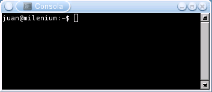
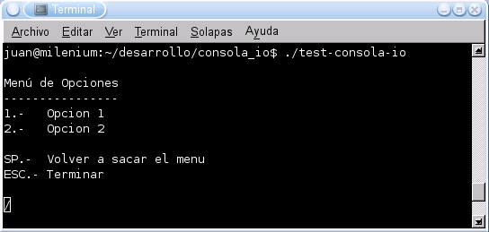
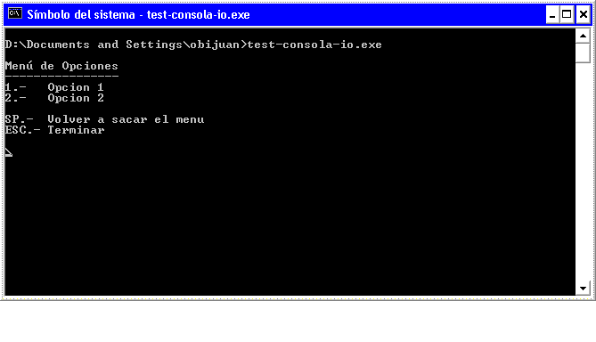

|
RECURSOS I: RUTINA CONSOLA_IO |

Consola_io son un conjunto de funciones escritas en C para acceder al teclado. En los sistemas Linux/Unix, la consola por defecto está configurada para ser “bloqueante”. Cada vez que una aplicación quiere leer información del teclado, se quedará bloqueada hasta que el usuario haya introducido los datos y pulsado la tecla Enter. Con las rutinas de Consola_io se podra acceder directamente al teclado, sin tener necesidad de “bloquearnos”.
En aplicaciones que utilizan la consola, sobre todo en programas de prueba, resulta muy útil poder leer directamente las teclas, sin esperar a la pulsación de Enter. O bien, detectar si alguna tecla (la que sea) ha sido apretada.
Yo utilizo estas rutinas para hacer programas de prueba para el manejo de robots. Por ejemplo, una aplicación de prueba que me permita mover un robot utilizando las teclas (Normalmente usando las teclas O,P,Q,A, a las que me acostumbre cuando jugaba con el Spectrum :-)
Lenguaje programación: C
Sistema operativo: Multiplataforma. Las fuentes compilan tanto para máquinas Linux como Windows (con Cygwin)
El ejemplo completo se encuentra en el fichero test-consola-io.c, incluido en el paquete fuente. Aquí se reproduce un fragmento (modificado por simplicidad), en el que se comprueba si hay una tecla pulsada. Si es así, se lee y se imprime en pantalla. Sino, el programa continúa.
|
if (consola_io_kbhit()) //-- ¿Tecla pulsada? { //-- Si, leerla c=consola_io_getch(); printf (“Tecla: %c\n”,c); } //-- No, continuar |
El programa test-consola_io.c muestra un menú con dos opciones (que no hacen nada). El usuario selecciona la opción apretando las teclas 1 ó 2. Mientras no haya tecla pulsada, el programa principal rotará una “barrita” (para mostrar que no está bloqueado).
Aquí se muestra un pantallazo de su funcionamiento en una consola Linux:

Exactamente el mismo programa, sin hacer ninguna modificación en el código fuente, se puede compilar directamente para Windows, utilizando Cygwin. Aquí se puede ver un pantallazo de su funcionamiento en una consola de MS-DOS, en una máquina con Windows XP:

Para compilar test-consola-io, bajar el paquete consola_io-x.x.tar.gz y hacer:
$ tar vzxf consola_io-x.x.tar.gz
$ cd consola_io-x.x
$ make
y para ejecutar:
$ ./test-consola-io
Se hace exactamente igual desde una Shell Cygwin en Windows (pero tienen que estar instaladas todas las herramientas de desarrollo: make, gcc, etc.)
Licencia GPL. Se conceden permisos para copiar, distribuir, modificar y redistribuir las modificaciones.
Las rutinas de Consola_io las tengo escritas desde hace muchísimos años y las he estado empleando para hacer programas de pruebas, normalmente de otras rutinas. Sin embargo, siempre que las intento buscar para utilizarlas, nunca las encuentro. Al final me tengo que acordar de los programas en las que las he usado. Para que no me vuelva a ocurrir, he decidido colgarlas en la web. Así además, le pueden resultar útiles a otras personas.
|
Software para descargar |
|
Paquete con las fuentes y el programa de ejemplo test-consola-io. Para Linux y Windows (Cygwin). Versión 1.0. |
|
|
|
|
Módulo Pyconsola_io: Rutinas para consola en Python
Cygwin: Entorno de desarrollo de aplicaciones POSIX para Windows. Incluye una DLL que ofrece una capa POSIX, de forma que cualquier aplicación que cumpla esa norma se podrá ejecutar en máquinas Windows. Además incluye todas las herramientas de GNU para windows, para poder realizar la compilación.
Cuaderno técnico 6: Desarrollo de aplicaciones multiplataforma Linux/Windows, para consola, con Cygwin
8/Abril/2007: Anadido enlace hacia el Cuaderno técnico 6 y al Módulo Pyconsola_io
18/Agosto/2004: Publicada versión 1.0 de Consola_io